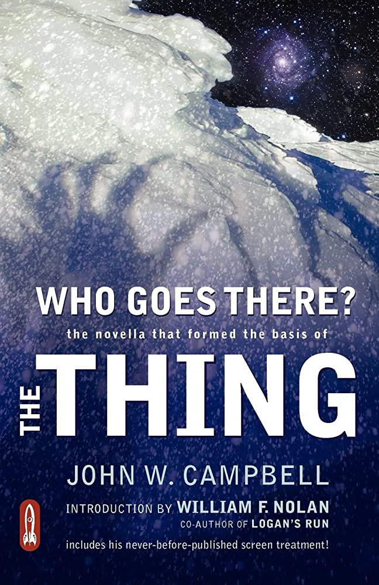
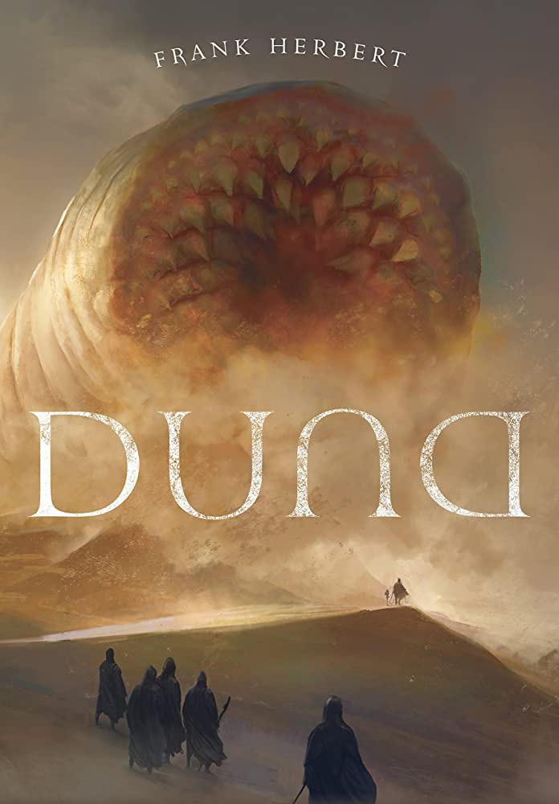
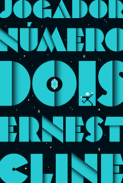
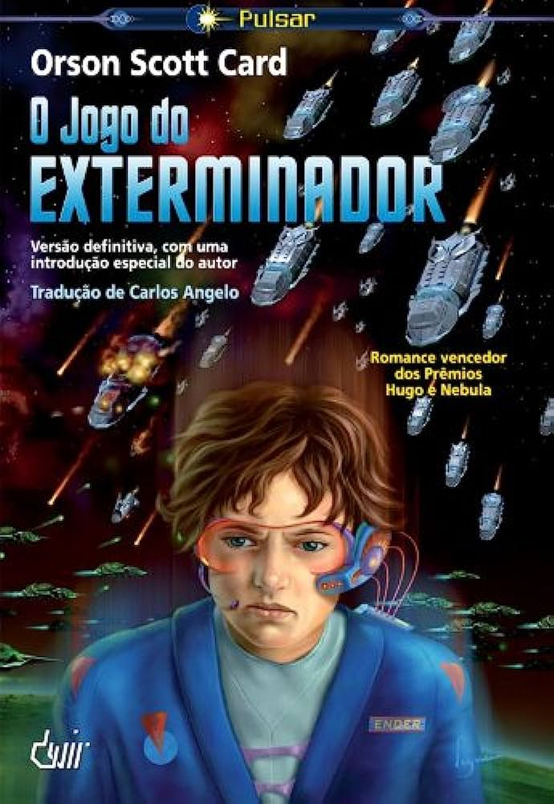

Livros
Categorias
Seja Um Tradutor
Traduzir Meu Livro
Cadastre-se / Login
Contato
ChocoBook's®
SECRET
HEHEHE
Auto-Ajuda e Neurociência
23 Hábitos Anti-Procrastinação - S. J...
A Fábrica de Cretinos Digitais - Michel...
As Armas Da Persuasão - Robert B. Cialdini
A Sutil Arte de Ligar o Foda-se - Mark Manson
O Guia Definitivo Para Nao Quebrar A Cara...
Terror
Frankstein - Mary Shelley
O Cemitério - Stephen King
O Exorcista - William P. Blatyy
O Iluminado - Stephen King
Who Goes There? - John W. Campbell
Ficção
Clube da Luta - Chuck Palahnuik
Duna - Frank Herbert (Livro 01)
Jogador Número Dois - Ernest Cline
O Jogo do Exterminador - Orson...
O Senhor dos Aneis - J. R. R. Tolkien (SAGA...
 ChocoBook's®
ChocoBook's® O Senhor dos Aneis - J. R. R. Tolkien (SAGA...
O Senhor dos Aneis - J. R. R. Tolkien (SAGA...